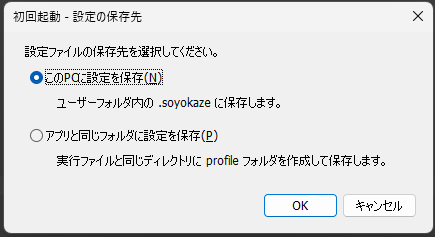

インストール
動作環境
SoyokazeはWindows環境で動作する。 以下の環境で動作確認済。
Windows11 64bit
Windows10 64bit
ダウンロード
GitHubの最新版リリースページからダウンロードします。
Assets欄にある.zip形式のファイルが、実行ファイル一式をまとめたアーカイブです。ダウンロードしたファイルは、7-Zipなどの解凍ソフトで展開してください。
インストール
ダウンロードした
.zipファイルを、任意のフォルダに展開する展開したフォルダを開き、soyokaze.exe を実行する
初回起動時に表示される画面で、設定ファイルの保存先を選択する
本アプリは、展開したフォルダから実行できます。スタートメニューなどから起動したい場合は、必要に応じてショートカットを作成してください。
設定ファイルは、初回起動時に選択した保存先に保存されます。
アンインストール
アンインストーラはないため、以下すべてを手動で行う。
作成したショートカットがある場合は、タスクトレイのメニューから
アプリケーションの設定>基本>ショートカット設定を開き、ショートカットを削除するアプリを終了する
インストール時に展開したフォルダを削除する
設定フォルダがインストール先とは別に存在する場合は削除する（通常モードではユーザーフォルダ直下の .soyokaze フォルダ）
バージョンアップ
新しいバージョンのアーカイブをダウンロードして展開する
本アプリを実行している場合は終了する
実行ファイルを置いたフォルダ内のファイルをすべて上書きする
アプリデータの保存フォルダ
初回起動時に通常モードとポータブルモードのどちらで設定を保存するか選択する。選択画面は、ユーザーフォルダ直下の .soyokaze フォルダと、実行ファイルと同じフォルダの profile フォルダがどちらも存在しない場合に表示される。

このPCに設定を保存: ユーザーフォルダ直下(通常はC:\Users\<ユーザー名>)の .soyokaze フォルダに保存する。アプリと同じフォルダに設定を保存: 実行ファイルと同じフォルダにprofileフォルダを作成し、その中に保存する。
選択画面でキャンセルすると、アプリは起動しない。
ポータブル版
実行ファイルと同じフォルダにprofileフォルダが存在する場合、ポータブルモードとして動作する。通常モードとポータブルモードの保存先が両方存在する場合は、ポータブルモードを優先する。
既存の保存先がある場合、初回起動時の選択画面は表示せず、その保存先を引き継ぐ。